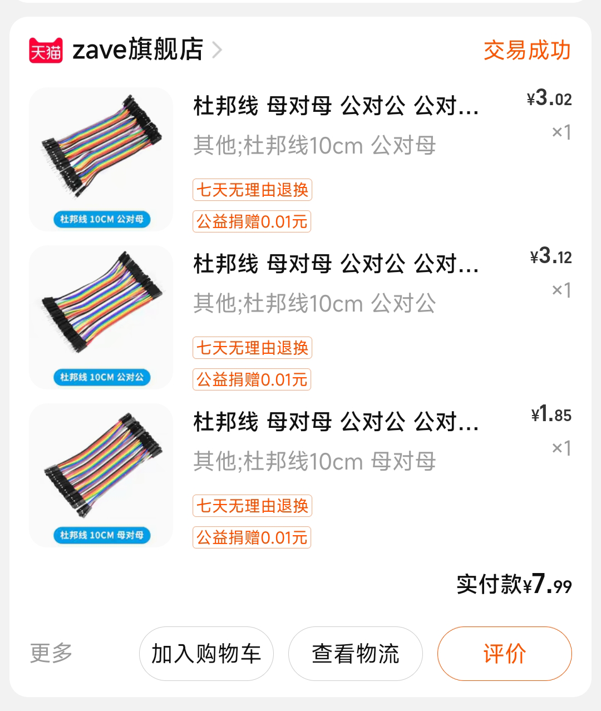
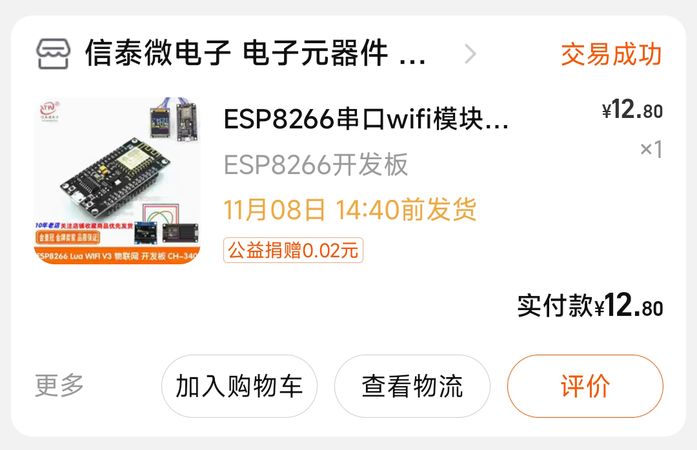
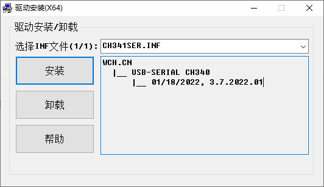
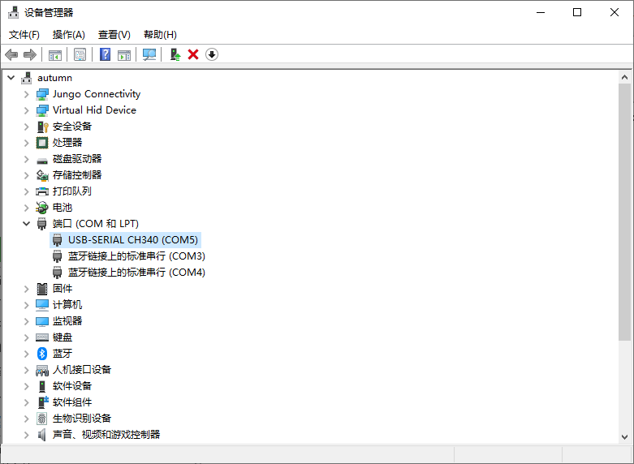
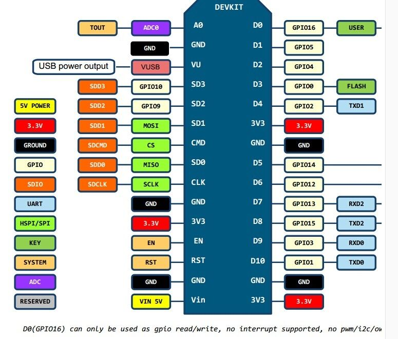
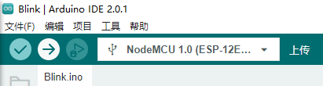
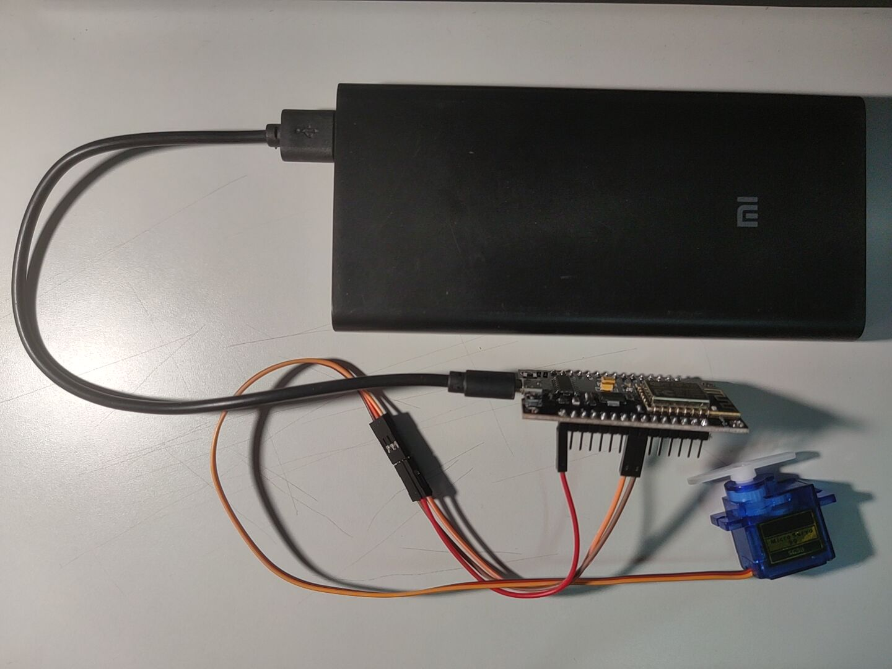
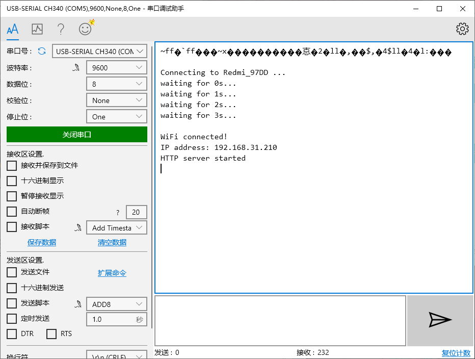
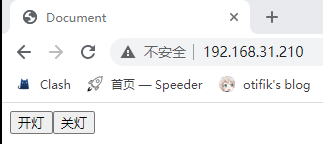

如何用esp8266开发板控制sg90进行旋转#
所需工具#
硬件准备：
1.esp8266 CH340开发板
2.sg90舵机
3.杜邦线若干
4.一根microusb数据线（不同usb数据线的区别）
请注意不同usb数据线的区别！！！
一般有两种usb数据线，一种是充电线，另一种是数据线。
充电线和数据线的区别在于充电线无法传输数据，而数据线可以传输数据。
一般数据线和充电线都是用USB接口的，一般都会有四根线。充电线用到的是电源的VCC和GND这两个线，而数据线是用到VCC，GND，和两根通信线。数据线在USB接口那跟线里有四条线，而电源线在USB那个线里有两条线，所以，数据线可以当电源线，而电源线不能用作数据线。
如果插入电脑驱动安装无反应请选择别的数据线。
请选择正确的数据线以保证开发板连接电脑时能正常安装驱动！！！
数据线的接线方式
红线：电源正极（接线上的标识为：+5V或VCC）
白线：负电压数据线（标识为：Data-或USB Port -）
绿线：正电压数据线（标识为：Data+或USB Port +）
黑线：接地（标识为：GROUND或GND）
充电线的接线方式
红线：电源正极（接线上的标识为：+5V或VCC）
黑线：接地（标识为：GROUND或GND）


软件准备：
1.Arduino IDE（官网安装）
2.驱动
3.串口调试助手（通过Microsoft Store进行安装）
安装驱动
驱动下载链接：https://www.wch.cn/download/CH341SER_EXE.html
1.将开发板通过usb数据线连接至电脑
2.启动CH341SER.EXE并进行安装

3.通过设备管理器查看是否安装成功

esp8266开发板作为服务器，客户端通过访问服务器的页面来控制sg90舵机进行旋转
1.接线
引脚说明图

如图
全景

esp视角

杜邦线视角

原理解释
2.代码编写
Servo库运用
1
2
3
4
5
6
7
8
9
10
11
12
13
14
15
16
17
18
19
20
21
22
23
24
25
26
27
28
29
30
31
32
33
34
35
36
37
38
39
40
41
42
43
44
45
46
47
48
49
50
51
52
53
54
55
56
57
58
59
60
61
62
63
64
65
66
67
68
69
70
71
|
#include <Servo.h>
#include <ESP8266WiFi.h>
#include <ESP8266WebServer.h>
//WiFi名称&密码
const char* ssid = "Redmi_97DD";
const char* password = "12345678";
ESP8266WebServer server(80);
Servo servo;
String html = "<!DOCTYPE html><html lang=\"en\"><head><meta charest=\"UTF-8\"><title>Document</title></head><body><a href=\"./swi?light=on\"><input type=\"button\" value=\"开灯\"></a><a href=\"./swi?light=off\"><input type=\"button\" value=\"关灯\"></a></body></html>";
String onJson = "{\"msg\": 200,\"light\": \"on\"}";
String offJson = "{\"msg\": 200,\"light\": \"off\"}";
void swi(){
if(server.arg("light")=="on"){
server.send(200, "application/json", onJson);
servo.write(180);
delay(1000);
servo.write(90);
}else if(server.arg("light")=="off"){
server.send(200, "application/json", offJson);
servo.write(0);
delay(1000);
servo.write(90);
}
}
void handleRoot() {
server.send(200, "text/html", html);
}
void handleNotFound(){
server.send(404, "text/plain", "404: Not found");
}
void setup() {
Serial.begin(9600);
Serial.println("");
servo.attach(D5);
WiFi.mode(WIFI_STA);
WiFi.begin(ssid, password);
Serial.print("\r\nConnecting to ");
Serial.print(ssid); Serial.println(" ...");
int i = 0;
while (WiFi.status() != WL_CONNECTED)
{
delay(1000);
Serial.print("waiting for ");
Serial.print(i++); Serial.println("s...");
}
Serial.println("");
Serial.println("WiFi connected!");
Serial.print("IP address: ");
Serial.println(WiFi.localIP());
server.begin();
server.on("/", handleRoot);
server.on("/swi",HTTP_GET, swi);
server.onNotFound(handleNotFound);
Serial.println("HTTP server started");
}
void loop() {
server.handleClient();
}
|
3.烧录代码并为开发板接电源


4.通过ip地址访问esp服务器

电脑端通过打印出的ip地址直接进行访问，效果如下：

现在就可以直接通过按钮进行舵机的控制。